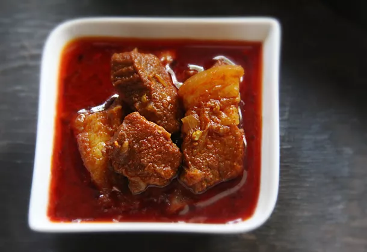

Spicy Pork Vindaloo

Description
It's the dish that the Portuguese left us with hundreds of years ago and adorns tables in Catholic homes over feast days and lazy Sundays. The "vin" part of the dish is derived from the Portuguese for wine or wine vinegar and the "aloo" translates as garlic.
These are the primary ingredients that go into this popular pork preparation, with the usual suspects of fiery dry red chiles and peppercorns. As legend goes, the chiles and pepper were the Indian addition to the Portuguese dish, which was more like a garlicky stew.
Pork Vindaloo is hot and unashamedly so. It also seems to use a mini lake of vinegar and rendered fat, but it is the combination of these ingredients that makes it one of the best dishes to have after a few days. The fat forms a sealing layer when solidified and the spices and vinegar intensify over time, infusing into the meat more and more, giving it its characteristic hot and sour taste. The recipe has seen many adaptations for non-pork eaters, with even a vegetarian version which uses meatier (sorry) vegetables like aubergines, potatoes, and mushrooms. But the original-flaky pork meat, capped with delicious soft fat that has soaked in all the tart and spicy goodness of the masala is the stuff that will make you a devotee.
Ingredients
- 5 dried Kashmiri chiles
- 2 teaspoons toasted whole cumin seeds
- 2 teaspoons turmeric
- 2 (1-inch) pieces of cinnamon, divided
- 9 whole black peppercorns, divided
- 7 whole cloves, divided
- 1 teaspoon sugar
- 10 garlic flakes (or 2 medium cloves garlic, roughly chopped)
- 1 inch-piece ginger, peeled and roughly chopped
- 1/2 cup palm vinegar, or 1/3 cup rice vinegar
- 1/2 pound pork shoulder, cut into 1-inch cubes
- Kosher salt
- 1 medium onion, roughly chopped (about 1 cup)
- 1 1/2 tablespoons vegetable oil
- 1 cup water
Steps
- Combine chiles, cumin, turmeric, 1 piece of cinnamon, 5 peppercorns, 4 cloves, and sugar in a spice grinder. Grind until a fine powder is formed. Transfer spice mixture to food processor or mortar and pestle and add garlic, ginger, and vinegar. Process or pound until a fine paste is formed. Scrape out paste into a small bowl and set aside without washing food processor.
- Place pork in a large bowl and season with salt. Add half of spice paste and turn pork to coat. Add onion to food processor and process until a paste is formed.
- Heat oil in a heavy-bottomed saucepan over medium heat until shimmering. Add onion paste (do not wash food processor bowl), remaining 4 peppercorns, remaining cinnamon stick, and remaining 3 cloves. Cook, stirring constantly, until onion is soft and oil is fragrant, about 5 minutes. Add remaining spice paste and cook, stirring occasionally, until the oil separates and mixture starts to sizzle, about 5 minutes longer.
- Add pork and cook, stirring occasionally, until browned, about 10 minutes. Add water to the food processor bowl and swirl to rinse. Pour mixture into pan and bring to a simmer, stirring occasionally. Reduce heat to maintain a gentle simmer, cover, and cook until the pork is fork tender, about 1 hour longer. Serve immediately with bread or rice, or for better flavor, cool, store overnight in a sealed container in the refrigerator, and reheat before serving.